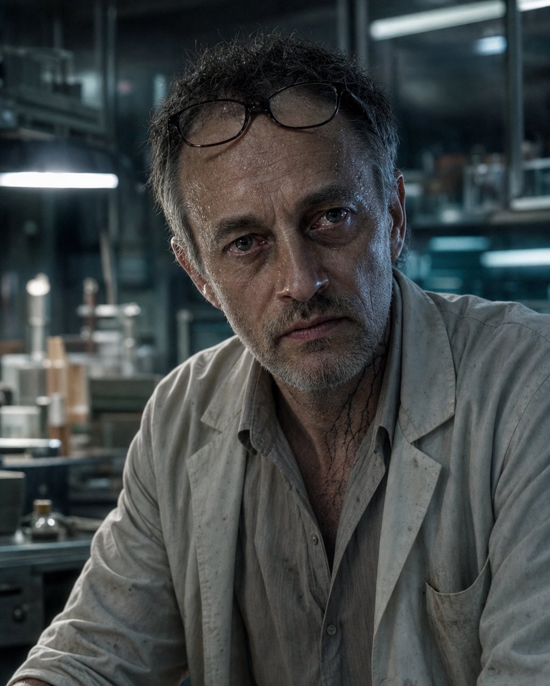
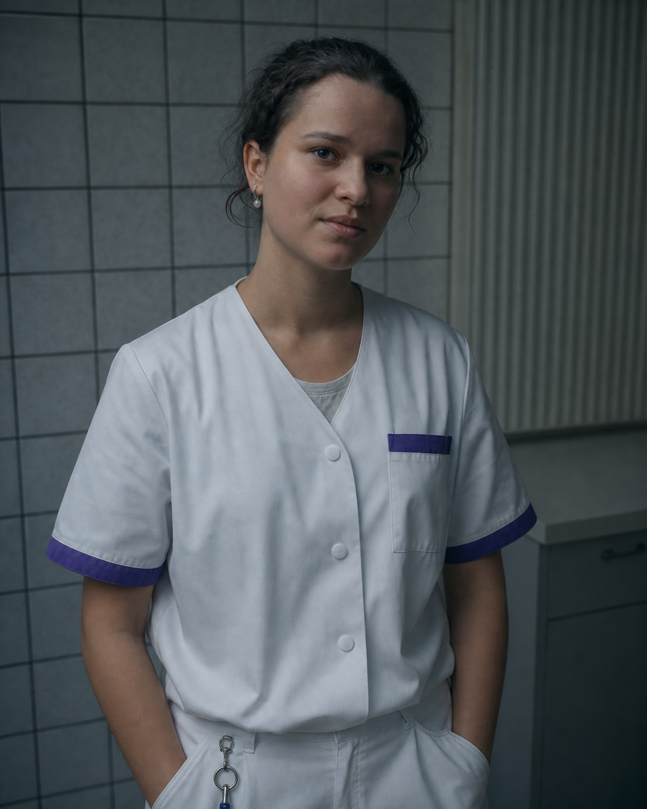
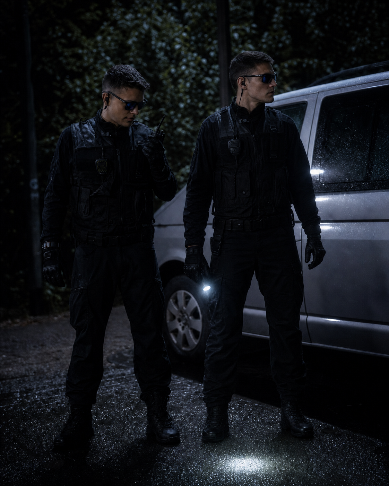

Richard · Akt I
Arzt, Zellforscher, Vater. Noch ohne sichtbare Integration.
V4 · vollständig neu generiert
Alle öffentlich verwendeten Portraits und Szenenbilder wurden neu aufgebaut. Hauptfilm-Frames verankern Gesichter, Kostüme, den gekachelten Raum, die Sicherheitskräfte und den hellen Van; Wärme, Labor und Epilog teilen jetzt eine Kamera- und Farbdramaturgie.

4:5 · Identitätsanker
Nora und Lilith sind sichtbar dieselbe Person. Richard bleibt vor und nach der Infektion identisch. Die Hauptfilmfiguren behalten Gesicht, Alter, Kostüm und Funktion.
Arzt, Zellforscher, Vater. Noch ohne sichtbare Integration.

Unveränderte Identität, aber systemische toxische Überlastung.

Die moralische Grenze der Handlung, nicht ihr passiver Vorwand.

Molekularbiologin, Tochter, Mitautorin der ersten Lüge.

Keine neue Person: Noras operative Identität nach der bewussten Freigabe.
Freundlich, präzise, austauschbar. Er verkauft Infrastruktur und Menschen.

Hauptfilmidentität, 18 Jahre alt, bis zu Noras Klick zu Hause.
Maske, Kittel, Tablet — exakt die klinische Funktion aus dem Hauptfilm.

Die Pflegeuniform und der Schlüsselbund verbinden ihre Prequel-Funktion mit Franks Flucht.

Erwachsener Studienteilnehmer, bereits widerrufen und trotzdem eingeschlossen.

Schwarze praktische Kleidung, Funk, keine Logos, keine Sci-Fi-Rüstung.
2,39:1 · Drehbuchreihenfolge
Kein Bild wird auf 3:2 beschnitten. Jedes Still besitzt sein echtes Kinoformat und führt zur entsprechenden Szene in der neuen V4-HTML.
Richard kennt die zwei Kurven und entscheidet sich trotzdem für Geschwindigkeit.

Eva formuliert den Satz, an dem alle späteren Entscheidungen gemessen werden.

A0,8 ist schnell und toxisch; A0,6 langsam, lokal und nur kontrollierbarer.

Kessler bietet keine Heilung, sondern Zeit, Infrastruktur und eine Schuld.

Nora macht aus biologischem Versagen einen technischen Ausreißer.

Das Profil stammt aus einer illegal sequenzierten Spender-Screeningprobe — nicht aus einem Routineblutbild.

Eva erfährt die tödlichen und übertragbaren Risiken. Ihre Zustimmung gilt ausschließlich ihrem Körper.

DNR, sichere Todeszeichen und Noras bewusste Beweisentscheidung schließen die alte Logiklücke.

Richard kollabiert beim Stornieren. Kesslers Werksarzt macht daraus später Herzversagen.

Eine frisch hergestellte Charge, langsame Integration und getrennte Blut-, Speichel-, Haut- und Luftbefunde.

Kesslers Alternative ist real. Nora entscheidet sich dennoch gegen Klara.

Susan, Lia und Frank sind exakt dort, wo „INFECTED“ sie benötigt; Lilith ist bei der späteren Behandlung nicht im Raum.

Keine abstrakte Drohung: Noras Freigabe erreicht das Wohnhaus unmittelbar.
Anschluss an den Hauptfilm
Der letzte Raum, Susans Maske und Tablet, Lias violett besetzte Uniform und Schlüsselbund, Franks OP-Hemd, die schwarzen Wachen und der silbergraue unmarkierte Van folgen konkreten Hauptfilm-Frames.
Gesicht, Haaransatz, Ohren und Proportionen bleiben über Kleidung und Licht hinweg dieselben.
A0,8 wandert schnell und systemisch. A0,6 beginnt lokal und langsam; kontrolliert bedeutet nie sicher.
Lilith ordnet die Reihenfolge an. Susan wird Klaras Dosis im Hauptfilm eigenmächtig erhöhen.